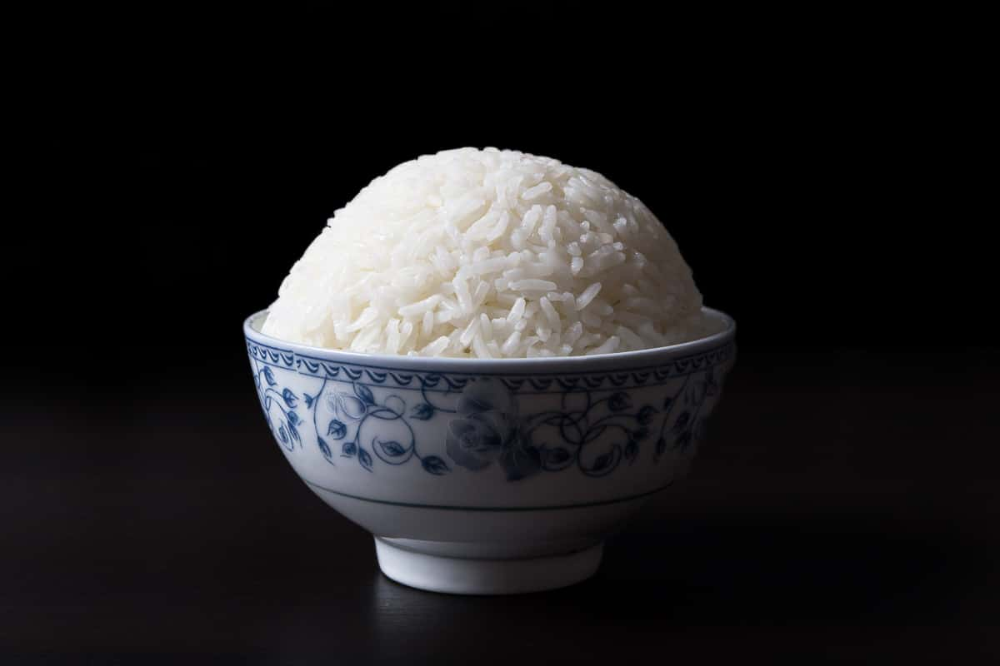

Pressure Cooker Rice Recipe

Description
Rice is a wonderful food that compliments most meals. Traditionally, rice is not cooked in a pressure cooker. However, pressure cookers offer a wide variety of benefits: consistent quality, minimal prep work, minimal cooktime, and easy-to-clean. If you don't have a pressure cooker, you can make lower quality rice in double the time and double the effort. If you are still interested, check out the steps below.
Ingredients
- 1 cup jasmine rice
- 1 cup water
- 1 tsp salt
Steps
- Rinse the rice with cold water. It is easy to do this with a strainer: place the rice in the strainer, place the strainer under a faucet of cold water while shifting the rice in the strainer, repeat until the water comes out clear or usually after about ten minutes
- Place the rice, water and salt into your pressure cooker.
- Cook the rice on high pressure for three minutes. Let the pressure release slowly for ten minutes.
- Promptly remove the rice from the pressure cooker as the heat causes it to dry out and stick. Your rice should be perfectly sticky and ready to eat. Enjoy!